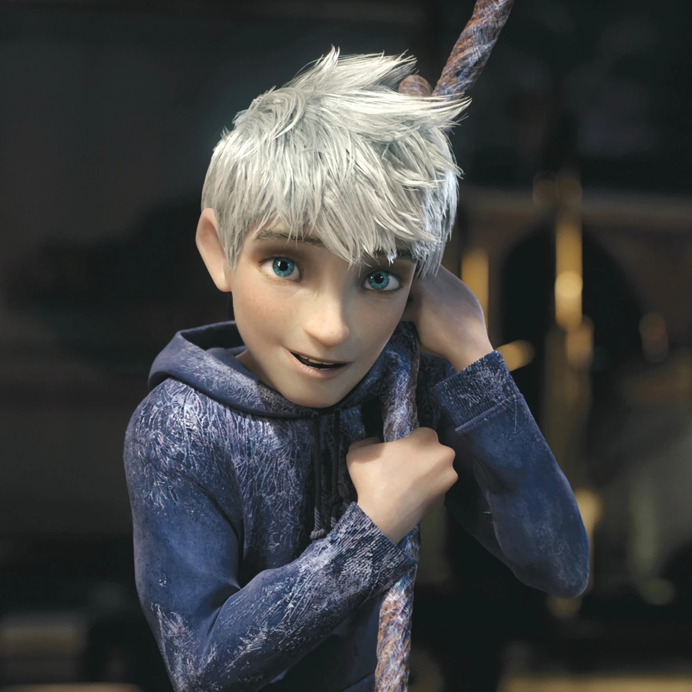

About Jack Frost
Jackson Overland Frost, better known as Jack Frost, is the main protagonist and narrator in Rise of the Guardians and an immortal supernatural being much like the Guardians. Unlike the others, however, he’s a loner, the classic rebel without a cause, sarcastic and mischievous. As the manifestation of winter, Jack Frost is capable of manipulating ice and snow. He is the spirit of mischief and chaos personified, but when he discovers the purpose behind his powers, he will become a true Guardian, representing "Fun."

class= Jack Frost and Rise of the Guardians
Jack Frost’s characteristics
- Ability to create ice and snow
- Distinctive appearance childish kind and blue eyes
- Main antagonist in "Rise of the Guardians"